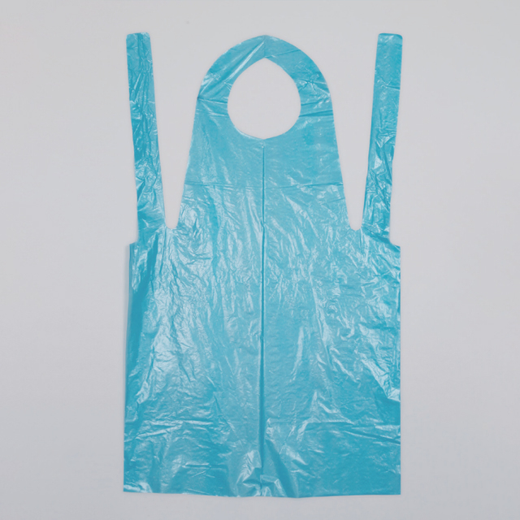

In healthcare environments, the risk of exposure to bodily fluids, infectious pathogens, and chemical disinfectants is a daily reality for nursing staff, cleaners, food service workers, and support personnel. While full isolation gowns and coveralls are appropriate for high-risk procedures and airborne pathogen protection, many routine tasks require a lighter, more economical solution. Disposable aprons fill this gap — offering reliable fluid barrier protection for the torso and upper legs at a fraction of the cost of a full gown.
This guide is written for facility managers, infection control practitioners, procurement officers, and medical distributors who need to understand apron types, material performance, sizing standards, and compliance requirements to make informed purchasing decisions.
Why Disposable Aprons Matter in Healthcare
Disposable aprons serve as a first-line physical barrier against splashes, sprays, and direct contact contamination. In healthcare settings, they are routinely worn during:
- Patient feeding and meal assistance. Food and liquid spills are common when supporting elderly, disabled, or recovering patients. Aprons protect staff uniforms from contamination and reduce cross-infection risk between patients.
- Wound dressing changes and minor procedures. When working with wound exudate, blood, or irrigating fluids, an apron provides an additional layer of protection beyond gloves and face protection.
- Patient bathing and personal hygiene care. Washing, bed-bathing, and toileting assistance frequently involve exposure to water, soap, urine, and faecal matter. Aprons keep staff clothing dry and clean.
- Environmental cleaning and disinfection. Housekeeping staff who apply chemical disinfectants to surfaces, handles, and floors benefit from apron protection against splashes of cleaning agents.
- Kitchen and food service operations. Healthcare food service workers wear aprons to maintain hygiene standards and prevent uniform contamination during food preparation and meal delivery.
- Laboratory and pharmacy work. Technicians handling liquids, reagents, and specimens use aprons as an additional barrier against accidental spills.
Unlike reusable fabric aprons, disposable alternatives eliminate laundering costs, reduce cross-contamination between patient contacts, and ensure consistent barrier performance with every use. For infection-controlled areas, single-use is the preferred approach.
Materials: PE vs. CPE
Disposable aprons are manufactured from two primary plastic materials, each offering distinct performance characteristics:
PE (Polyethylene) Aprons
PE aprons are made from standard polyethylene film, typically in thicknesses ranging from 0.015 mm to 0.025 mm. They are the most economical option and are suitable for light-duty applications:
- Lightweight and flexible. PE aprons are soft and pliable, comfortable for extended wear during long shifts.
- Basic fluid resistance. Effective against water-based liquids, light splashes, and dry particulates. Not recommended for use with aggressive chemicals or heavy fluid volumes.
- Cost-effective for high-volume use. Ideal for settings where aprons are changed frequently — between every patient contact in hospitals, or per shift in food service environments.
CPE (Chlorinated Polyethylene) Aprons
CPE aprons are manufactured from chlorinated polyethylene, a modified PE variant that offers enhanced physical properties:
- Greater thickness and durability. CPE aprons are typically 0.025 mm to 0.040 mm thick, providing superior tear and puncture resistance compared to standard PE.
- Embossed texture. Most CPE aprons feature an embossed surface pattern that improves grip and reduces the clingy feel of smooth plastic, making them more comfortable and practical for staff use.
- Improved fluid barrier. The denser molecular structure of CPE provides better resistance to fluid penetration, making these aprons suitable for procedures with moderate fluid exposure risk.
- Colour options. CPE aprons are commonly available in blue, white, and sometimes green, enabling colour-coding by department or task type (e.g., blue for patient care, white for food service).
For most healthcare applications, CPE aprons represent the better balance of protection, comfort, and cost. PE aprons remain appropriate for low-risk, high-frequency use cases such as food handling and light patient care.
| Property | PE Apron | CPE Apron |
|---|---|---|
| Typical thickness | 0.015-0.025 mm | 0.025-0.040 mm |
| Tear resistance | Moderate | High |
| Surface texture | Smooth | Embossed |
| Fluid resistance | Light splashes | Moderate splashes |
| Comfort | Good (lightweight) | Very good (embossed, less clingy) |
| Colour options | White, transparent | Blue, white, green |
| Cost per unit | Lowest | Low to moderate |
| Best suited for | Food service, light patient care | Patient care, cleaning, lab work |
Sizing and Coverage
Apron sizing affects both the area of protection and wearer comfort. Standard dimensions and options include:
- Standard size. Approximately 127 cm × 71 cm (50" × 28"), suitable for most adults. This is the most widely stocked size for general hospital, food service, and cleaning applications.
- Full coverage / extra-long. Extended length aprons (up to 140 cm / 55") provide additional lower body coverage for tasks involving significant fluid splash risk, such as patient bathing or environmental cleaning with wet methods.
- Neck tie and waist tie configuration. The standard design features a looped neck strap and two waist ties, allowing adjustable fit across different body sizes. Some designs include reinforced neck holes for added durability during extended wear.
- Sleeve options. While standard aprons are sleeveless, some applications call for aprons with integrated short sleeves for additional arm protection. These are less common but available for specialised use cases.
Single-Use vs. Reusable: The Infection Control Case
Reusable fabric or PVC aprons are available and have a place in certain environments. However, in healthcare settings, disposable aprons offer compelling advantages:
- Cross-contamination prevention. A fresh apron for each patient interaction or task eliminates the risk of transferring pathogens between patients or zones. Reusable aprons, even when laundered, carry residual risk if laundering protocols fail.
- No laundering costs. Disposable aprons eliminate the water, energy, detergent, and labour costs associated with laundering reusable aprons. For high-volume facilities, this translates to significant operational savings.
- Consistent performance. Every new disposable apron delivers the manufacturer's specified barrier performance. Reusable aprons degrade over time — fabric thins, seams weaken, and waterproof coatings deteriorate.
- Convenience and compliance. Staff are more likely to wear a fresh apron when it is immediately available and requires no effort to don. Ease of use drives compliance with infection control protocols.
"We switched from reusable fabric aprons to disposable CPE aprons in our nursing units two years ago. The per-unit cost was negligible, but the improvement in infection control compliance was immediately visible. Staff actually wear them now because they're easy to grab and put on." — Head Nurse, Long-Term Care Facility
Applications Beyond Healthcare
While healthcare is a primary market, disposable aprons serve multiple industries:
- Food service and catering. Kitchen staff, food handlers, and catering teams use disposable aprons to maintain hygiene standards during food preparation, cooking, and service. PE aprons are common in this sector due to the low fluid exposure risk.
- Cleaning and janitorial services. Professional cleaners handling chemical disinfectants and wet cleaning methods benefit from CPE aprons for splash protection.
- Veterinary and animal care. Veterinary clinics, animal shelters, and pet grooming services use aprons to protect against bodily fluids, grooming chemicals, and general mess.
- Industrial and manufacturing. Light industrial applications, such as painting, assembly, and packaging, use disposable aprons to protect work clothing.
- Education and childcare. Schools, nurseries, and childcare centres use aprons during art, science, and meal activities to protect children's and staff clothing.
Regulatory and Quality Standards
Disposable aprons for healthcare use should meet recognised quality and safety standards:
- EN 13795 (EU). For surgical drapes, gowns, and clean air suits, this European standard defines performance requirements including liquid barrier properties. While aprons are not surgical garments, EN 13795-compliant materials provide a benchmark for fluid resistance performance.
- EN 14126 (EU). Performance requirements for protective clothing against infective agents. Aprons intended for use in infectious disease settings should reference this standard for material validation.
- FDA (US). In the United States, disposable aprons used in healthcare may be classified as Class I medical devices if marketed for infection prevention. Manufacturers should have FDA establishment registration.
- ISO 13485. Quality management system certification for medical device manufacturers ensures consistent production quality, traceability, and compliance with regulatory requirements.
- REACH and RoHS. For aprons sold in the EU, compliance with REACH (chemical substance regulation) and RoHS (restricted substances) ensures that materials do not contain hazardous chemicals above threshold levels.
- Food contact compliance. For aprons used in food service, materials should comply with relevant food contact regulations (e.g., FDA 21 CFR in the US, EU Regulation 10/2011).
Procurement Planning and Consumption Benchmarks
Understanding consumption patterns helps procurement managers optimise ordering and negotiate favourable pricing:
- General hospital ward. Aprons are used across multiple departments. Nursing staff may use 2-5 aprons per shift depending on patient acuity and tasks performed. A 40-bed ward might consume 100-200 aprons per week across all departments.
- Long-term care and nursing homes. More predictable consumption patterns with steady daily use for feeding, bathing, and hygiene care. Expect 1-3 aprons per resident per day in facilities with intensive personal care programmes.
- Food service and kitchen operations. Aprons are typically changed per shift or per task (e.g., switching from raw food to cooked food preparation). A hospital kitchen serving 500 meals per day may use 30-50 aprons daily.
- Cleaning and housekeeping. Usage varies by cleaning protocol intensity. Deep cleaning teams may use 1-2 aprons per shift, while routine cleaning may require fewer.
For bulk procurement, aprons are typically supplied in packs of 50, 100, or 200 units, with cartons containing 5-10 packs. Shelf-stable with no special storage requirements, disposable aprons are easy to stock and distribute across facilities.
Conclusion
Disposable aprons are a small but essential component of any comprehensive infection control programme. They provide reliable, economical fluid barrier protection for healthcare workers, food service staff, and cleaning personnel across a wide range of daily tasks. The choice between PE and CPE aprons depends on the level of fluid exposure risk, the need for durability, and budget considerations. For most healthcare applications, CPE aprons offer the best combination of protection, comfort, and value.
Newrise Medical manufactures disposable PE and CPE aprons in standard and extended sizes, with options for colour-coding, custom packaging, and OEM branding. All aprons are produced in ISO 13485 certified facilities with consistent quality and competitive pricing. Contact us for samples and pricing →